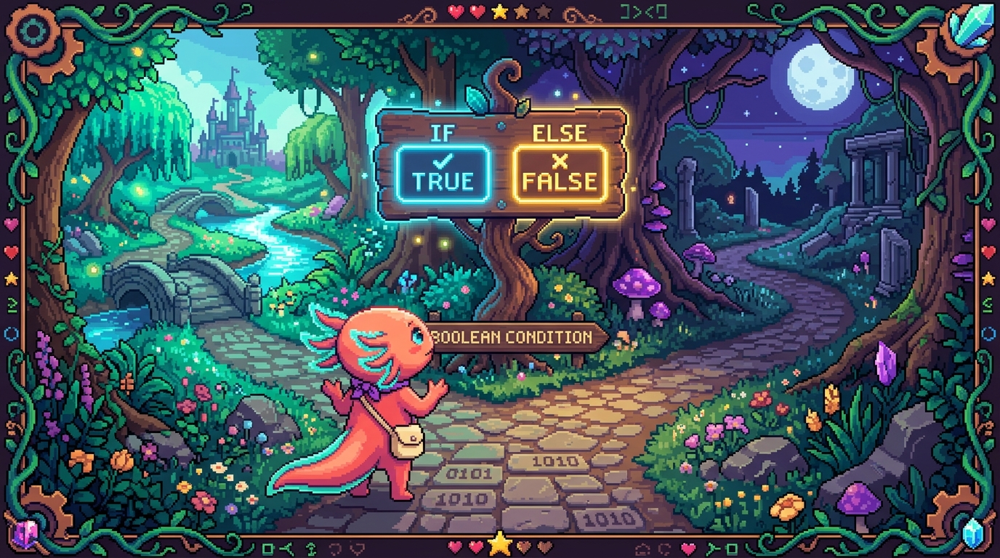

Capítulo 02 — Operadores y decisiones

Ya sabes guardar datos en variables. El siguiente paso es operar con ellos (sumarlos, compararlos) y hacer que tu programa tome decisiones según lo que salga. Aquí entra en juego el segundo ingrediente del Módulo 00: las decisiones (
if/else).
1. Operadores aritméticos (matemáticas)
🟦 ¿Qué significa? — Operador
Un operador es un símbolo que hace una operación con uno o más valores. Los aritméticos son los de toda la vida, los de matemáticas: | Operador | Operación | Ejemplo | Resultado | |---|---|---|---| |
+| suma |5 + 3|8| |-| resta |5 - 3|2| |*| multiplicación |5 * 3|15| |/| división |6 / 3|2| |%| resto (módulo) |7 % 3|1| |**| potencia |2 ** 3|8|🟦 ¿Qué significa? — El operador resto
%(módulo)
%te da lo que sobra de una división.7 % 3es 1 porque 7 entre 3 da 2 y sobra 1. Al principio suena rebuscado, pero acaba siendo de los más prácticos: por ejemplo, un número es par sinumero % 2 === 0(al dividirlo entre 2 no sobra nada). Lo vas a acabar usando más de lo que ahora imaginas.⚠️ Cuidado —
+con texto: concatenaciónSi pones
+entre textos (strings), no suma: los pega uno detrás de otro (concatena).javascript "Hola " + "Edwar" // "Hola Edwar" 5 + 3 // 8 "5" + 3 // "53" ← ¡ojo! el "5" es texto, así que pegaJusto por esto vale la pena usar las template strings (`...${}`) del capítulo anterior: te ahorran este lío.
2. Variables que cambian: operadores de asignación
🟦 ¿Qué significa? — Asignación compuesta
Son atajos para modificar una variable a partir de su propio valor:
javascript let total = 10; total += 5; // igual que: total = total + 5 → 15 total -= 3; // 12 total *= 2; // 24+=se lee algo así como "súmale esto y guárdalo". Aparece mucho en contadores.
3. Comparaciones: preguntas que dan true o false
Antes de decidir algo, casi siempre necesitas comparar dos valores. Y toda comparación
devuelve un booleano: true o false, sí o no.
🟦 ¿Qué significa? — Operadores de comparación
Operador Pregunta Ejemplo Resultado ===¿son iguales (valor y tipo)? 5 === 5true!==¿son distintos? 5 !== 3true>¿mayor que? 5 > 3true<¿menor que? 3 < 5true>=¿mayor o igual? 5 >= 5true<=¿menor o igual? 4 <= 3false⚠️ Cuidado — Usa
===, no==JavaScript tiene dos maneras de comparar igualdad, y conviene tenerlo claro desde ya: -
===(tres iguales) compara valor y tipo. Es la que quieres:5 === "5"dafalse(un número no es lo mismo que un texto). -==(dos iguales) compara de forma "laxa" y va convirtiendo cosas por su cuenta:5 == "5"datrue. Ese tipo de magia provoca errores difíciles de rastrear. Quédate siempre con===y!==. Y recuerda que un solo=no compara: asigna. Resumiendo los tres niveles:=asigna,==compara mal,===compara bien.
4. La decisión: if, else if, else
🟦 ¿Qué significa? — La estructura
if(si)
ifejecuta un bloque de código solo si una condición se cumple. Si no se cumple, puedes ofrecer alternativas conelse if(si no, ¿y si pasa esto otro?) yelse(si no, en cualquier otro caso): ```javascript const edad = 20;if (edad >= 18) { console.log("Puede entrar"); } else { console.log("No puede entrar"); }
`` La condición va entre **paréntesis**( )y el código que se ejecuta entre **llaves**{ }`. ¿Te suena de algo? Es el mismo algoritmo del evento que viste en el Módulo 00, pero ahora escrito en código de verdad.
Cuando hay varias ramas posibles:
const nota = 85;
if (nota >= 90) {
console.log("Excelente");
} else if (nota >= 70) {
console.log("Aprobado");
} else {
console.log("Reprobado");
}
// Como nota es 85, muestra: Aprobado
💡 Tip — Cómo se evalúa
JavaScript va leyendo las condiciones en orden, de arriba abajo, ejecuta el primer bloque cuya condición se cumple y se salta todo lo demás. Por eso el orden no es un detalle: pon arriba las condiciones más específicas o más altas.
5. Combinar condiciones: operadores lógicos
Muchas veces una decisión no depende de una sola cosa, sino de varias a la vez.
🟦 ¿Qué significa? — Operadores lógicos
&&,||,!
&&(Y): es verdadero solo si las dos condiciones lo son.||(O): es verdadero si al menos una lo es.!(NO): da la vuelta al valor (detrueafalsey al revés). ```javascript const edad = 25; const tieneEntrada = true;if (edad >= 18 && tieneEntrada) { console.log("Bienvenido"); // ambas verdaderas → entra }
if (edad < 13 || edad > 65) { console.log("Descuento"); // basta una } ```
🟦 ¿Qué significa? — Valores "verdaderos" y "falsos" (truthy/falsy)
Dentro de una condición, JavaScript trata algunos valores como falsos aunque no sean exactamente
false: el0, el""(texto vacío),nullyundefined. Todo lo demás cuenta como "verdadero". Esto te permite escribirif (nombre)para preguntar "¿nombre tiene algo dentro?". Es cómodo, pero por ahora mejor sé explícito (if (nombre !== "")) hasta que te sientas a gusto con el truco.
✅ Checklist — ¿ya domino esto?
- [ ] Uso operadores aritméticos, incluido
%(resto) y entiendo la concatenación con+. - [ ] Uso asignación compuesta (
+=,-=…). - [ ] Comparo con
===/!==(¡no==!) y<,>,<=,>=. - [ ] Escribo decisiones con
if,else if,else. - [ ] Combino condiciones con
&&(Y),||(O) y!(NO). - [ ] Entiendo a grandes rasgos los valores truthy/falsy.
🧪 Ejercicios
Hazlos en la consola (F12 → Console) para ver los resultados al instante.
- Par o impar. Escribe una condición que diga si un número guardado en
nes par (pista: usa%). - Predice el resultado. ¿Qué da cada uno?
5 === "5",5 !== 3,"a" + "b",10 % 4. - Tres ramas. Escribe un
if/else if/elseque, según una variablehora(0–23), diga "Buenos días" (<12), "Buenas tardes" (<19) o "Buenas noches". - Lógicos. Escribe la condición para "el usuario puede comprar si es mayor de edad y tiene saldo mayor a 0".
- 💻 Mini-validación. Crea
const correo = "hola@ejemplo.com";y unifque, usandocorreo.includes("@")(devuelve true/false), muestre "Correo válido" o "Correo inválido".
➡️ Siguiente: Capítulo 03 — Bucles y funciones.